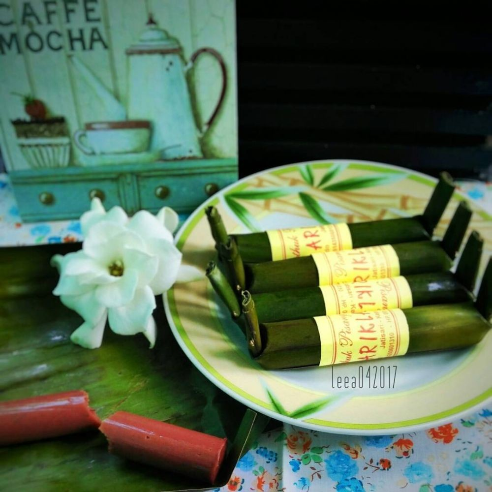
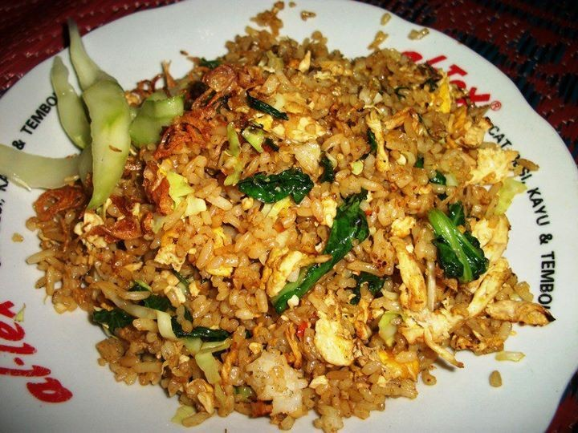
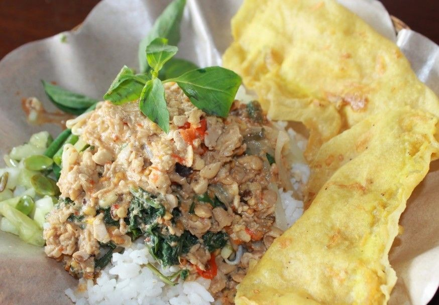
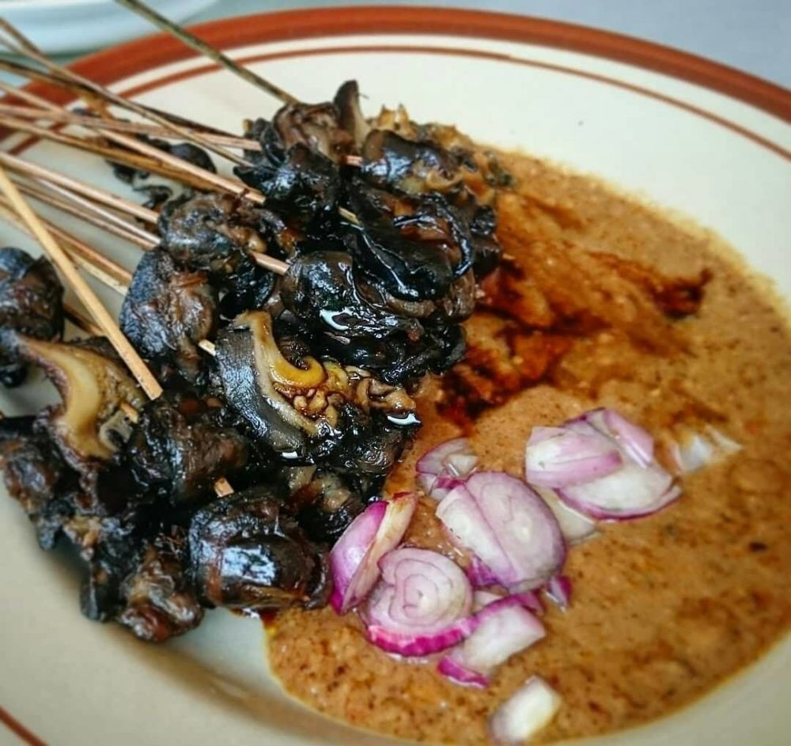
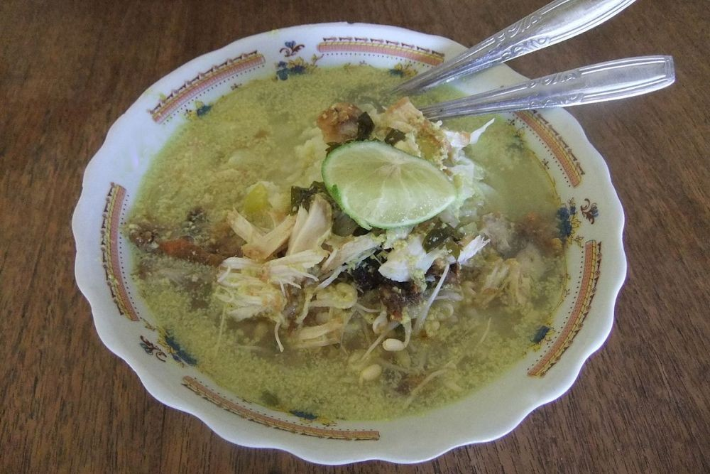
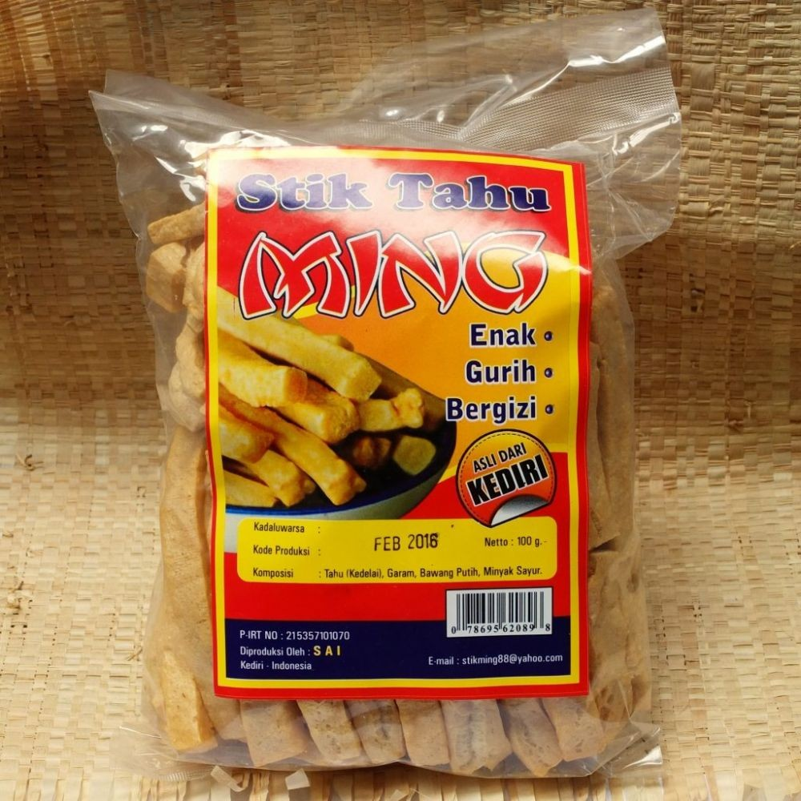
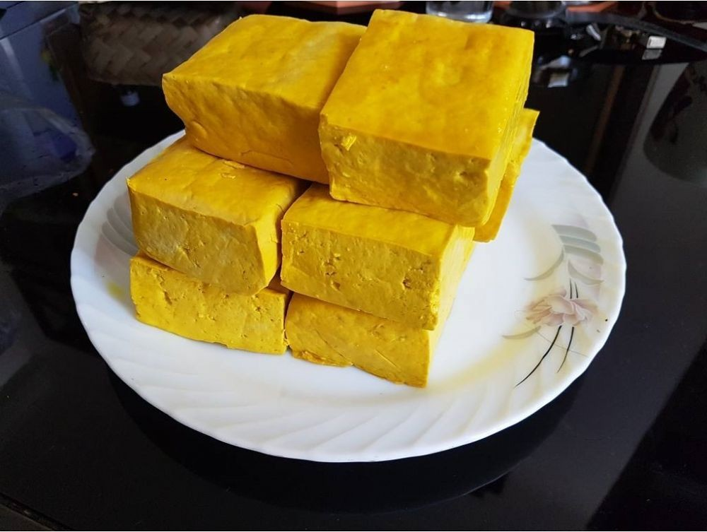

.jpg)
This is Typical Food From My Hometown

Selanjutnya ada makanan khas Kediri yang terkenal. Dia adalah gethuk pisang. Makanan ini terlihat seperti kemasan lontong. Yakni digulung menggunakan daun pisang. Cara pembuatannya pun terbilang sederhana. Yakni kukus pisang hingga lembut kemudian dikupas dari kulitnya. Pisang tadi dih dihancurkan dan ditambahkan gula. Dimasukan kedalam lintingan daun pisang, kemudian didinginkan.
Di Kediri ada nasi goreng arang. Namun, apakah benar nasi goreng menggunakan arang? Lalu bagaimana rasanya jika betulan menggunakan arang? Tenang, nasi goreng tidak dibuat dari arang. Tapi cara pembuatannya menggunakan arang dan anglo. Tujuannya tentu ingin menghadirkan rasa dan aroma yang khas. Tidak jarang para penjual harus ekstra bekerja karena masih menggunakan arang. Jika di Kediri, nikmati nasi goreng arang di malam hari. Banyak penjual yang menjajakan nasi gorengnya di pinggir jalan. Gerobaknya pun hampir sama. Nah, untuk menikmati makanan khas Kediri Jawa Timur ini harus sabar. Sebab proses yang tradisional ini membutuhkan waktu. Tidak sama seperti menggunakan gas. Penjual harus mengipas api agar menyala dengan stabil. Tidak jarang juga ada yang menggunakan kipas angin. Harga dari kuliner ini cukup terjangkau, yakni 15 ribu rupiah saja. Anda juga bisa rikues rasa pedas atau tidak pedas. Jika meminta rasa pedas, tentu saja ditambahkan irisan cabai rawit saat dimasaknya.
Siapa yang tidak kenal dengan nasi pecel? Nasi putih yang disantap bersama aneka sayuran (pecel) ini bisa juga kamu jumpai di Kediri, Jawa Timur. Warga Kediri biasanya menyajikan nasi pecel bersama sambal tumpang. Apa itu sambal tumpang? Sambal tumpang adalah sambal yang terbuat dari tempe busuk atau tempe bosok orang Kediri menyebutnya. Sambal tumpang sendiri adalah kuliner yang berasal dari kota Kediri. Tempe busuk bagi masyarakat Kediri digunakan karena menurutnya mampu meningkatkan nafsu makan. Bumbu-bumbu yang digunakan untuk membuat sambal tumpang antara lain cabai, bawang merah, bawang putih, dan bahan lain sebagai pelengkap. Untuk penyajiannya tidak ada yang berbeda. Nasi putih disajikan bersama dengan berbagai jenis sayuran ke dalam wadah yang terbuat dari daun pisang atau piring, setelah itu di pinggirannya akan diletakkan beberapa sendok sambal tumpang.
Wah bicara dulu Kali merasakan langsung heran. Apa yang bisa dimakan? Nah, di Kediri tentu saja Anda bisa bertanya di bekicot yang tidak ada di kota manapun. Sate bekicot ini dibuat dari siput sawah. Namun, para pedangan sate ini mendapatkan daging bekicot dari para pengepul. Tentunya daging tersebut sudah tidak berlendir, dan tidak bercangkang. Kemudian diolah dengan cara dikrengseng dengan menambahkan bumbu pedas. Kemudian disajikan dengan bumbu kacang. Daging bekicot ini kenyal dan empuk kompilasi digigit. Bagi yang pertama makan agak aneh, tapi tetap enak. Karena bumbu kacangnya bikin sate bekicot ini makin nikmat. Untuk harga pun tak usah risau. Karena harga satu porsi sate bekicot hanya 8 ribu rupiah saja. Isinya 20 tusuk. Sate ini dapat ditemui disepanjang Jl. Raya Kecamatan Plosoklaten Wates Kediri Jawa Timur.
Soto merupakan makanan sejuta orang. Saat ke Kediri kamu juga akan menjumpai soto. Soto di Kediri sedikit berbeda dari yang lain. Sekilas tampilan memang seperti soto biasa. Namun bahannya berbeda. Soto Kediri ini menggunakan kuah santan kuning. Hampir seperti opor. Rasanya gurih. Ditamba suwiran ayam, kemudian semangkuk nasi dan keripik kentang. Jika ingin mendapatkan soto ini bisa ditemui di kawasan Terminal Tamanan, Mojoroto, Kediri. Di sana bisa mendapatkan soto Kediri dengan harga mulai 4 ribu rupiah saja. Sangat murah. Di sini Anda bisa traktir teman-teman sepuasnya, karena harganya sangat terjangkau. Awalnya soto ini berjualan di kawasan Bok Ijo atau Jembatan Hijau. Kemudian pindah lokasi. Bagi warga Kediri soto ini sering disebut dengan Soto Tamanan. Karena lokasi jualnya sekarang di Terminal Tamanan Kediri.
Olahan tahu memang beragam. Di Kediri Anda bisa bertemu stik tahu. Stik tahu ini panjangnya sekitar satu ruas jari telunjuk. Rasanya gurih dan renyah. Stik tahu ini dibuat dari tahu dan bumbu rempah lainnya. Menjadikan ideal sesuai keinginan. Stik tahu biasa dimakan sebagai makanan pendamping. Seperti pendamping soto, sup, nasi campur dan lainnya. Karena fungsinya hampir sama seperti kerupuk. Namun jika dicamil pun sah-sah saja. Dicamil sambil nonton film, atau saat ngobrol bersama teman atau keluarga. Stik tahu ini tahan satu bulan di tempat tertutup. Selain itu bisa dibuat makanan khas Kediri untuk oleh-oleh. Kuliner ini pun akan menjadi favorit keluarga. Selain bagi para pecinta tahu. Tidak dapat meminta cadangan gizinya, kudapan ini bernilai gizi tinggi.
Nah last but not least ada tahu takwa. Jika di Kediri tentu tidak dapat dilepas dari tahunya. Karena kota ini sendiri dijuluki kota tahu. Baca ada tahu takwa. Itu adalah tahu kuning, dimana warna kuning diperoleh dari air kunyit. Tahu takwa ini berbentuk persegi empat dan mudah pipih. Kepadatannya pun jauh lebih baik daripada tahu putih yang mudah hancur. Untuk rasa, tahu takwa bercitarasa gurih. Sama sekali tidak asam. Jika digoreng, bagian luarnya tampak kering dan krispi. Namun didalamnya lembut. Biasanya tahu takwa ini dijadikan bahan tumisan. Karena rasanya gurih, sering kali ditumis denga tauge. Atau digunakan untuk campuran bakmi ayam. Sejarah dari tahu takwa ini sendiri dimulai kompilasi orang Tiongkok datang ke Kediri. Nah, di antara mereka yang menjadi tahu pelopor takwa tadi. Kemudian di tahun 1912 pelopor tahu takwa, Lau Soe Hoek kemudian memulai usaha. Tahu takwa ini sudah cukup tua, dan menjadi makanan legenda di sana. Maka jika ke Kediri harus membawa makanan khas Kediri yang terkenal ini. Karena di rumah nanti bisa dikreasikan sesuka hati.Thank You for Visiting.
Have a nice day